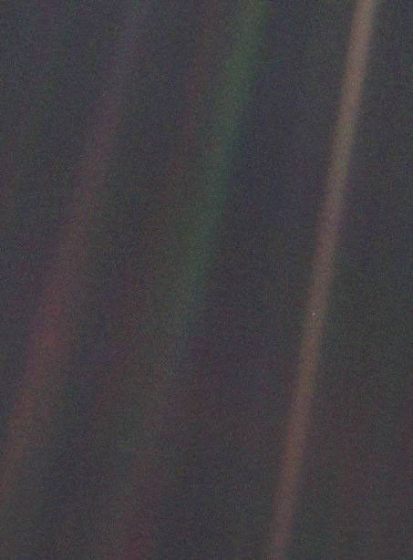

달을 1픽셀 크기로 줄여보았습니다.
모든 천체의 크기와 천체 간 거리 비율은 그대로입니다.
우리는 아직 태양계를 직접 탐험하기엔 너무 일찍 태어났습니다.
다만, 우리는 스크롤을 내리면서 태양계의 크기를 상상하기엔 딱 좋은 시기에 태어났죠.
태양계를 탐험하는 탐험자(Voyager)로, 당신을 초대합니다.
가로로 드래그하거나, 마우스 휠을 내려 오른쪽으로 이동합니다.
화면 아래의 눈금은 태양 중심으로부터의 거리를 나타냅니다.
아래 버튼으로 AU, 광분, km 단위를 바꿀 수 있습니다. 참고로 점 하나 당 3,500 km랍니다.
오른쪽 아래의 빛 아이콘을 누르면, 광속으로 이동하는 속도를 체감할 수 있습니다.

이 먼 시점에서 보면, 지구는 특별히 눈에 띄지 않을지도 모릅니다. 그러나 우리에게는 다릅니다. 저 점을 다시 보십시오. 그것이 여기입니다. 그것이 집입니다. 그것이 우리입니다. 그 위에서 당신이 사랑하는 모든 사람, 당신이 아는 모든 사람, 당신이 들어본 모든 사람, 지금까지 존재했던 모든 인간이 삶을 살아냈습니다.
우리의 기쁨과 고통의 총합, 수천 개의 자신만만한 종교와 이념과 경제 이론들, 모든 사냥꾼과 채집자, 모든 영웅과 겁쟁이, 모든 문명의 창조자와 파괴자, 모든 왕과 농부, 사랑에 빠진 모든 젊은 연인, 모든 어머니와 아버지, 희망에 찬 아이, 발명가와 탐험가, 모든 도덕의 교사, 모든 부패한 정치가, 모든 “슈퍼스타”, 모든 “최고 지도자”, 우리 종의 역사 속 모든 성인과 죄인이 그곳에 살았습니다. 햇빛 한 줄기 속에 떠 있는 먼지 한 알갱이 위에서.
지구는 거대한 우주라는 무대에서 아주 작은 무대입니다. 수많은 장군과 황제들이 영광과 승리 속에서 저 점의 일부를 잠시 지배하는 주인이 되고자 흘리게 한 피의 강을 생각해 보십시오. 이 픽셀의 한 구석에 사는 사람들이, 거의 구별되지 않는 다른 구석의 사람들에게 가한 끝없는 잔혹함을 생각해 보십시오. 그들의 오해가 얼마나 잦았는지, 서로를 죽이려는 열망이 얼마나 강했는지, 그들의 증오가 얼마나 뜨거웠는지를 생각해 보십시오.
우리의 허세, 상상 속의 자기중요감, 우주에서 우리가 어떤 특권적 위치에 있다는 착각은 이 창백한 빛의 점 앞에서 도전받습니다. 우리의 행성은 거대하게 감싸는 우주의 어둠 속에 외롭게 놓인 작은 점입니다. 우리의 무지 속에서, 이 광대함 속에서, 우리 자신으로부터 우리를 구해 주기 위해 다른 곳에서 도움이 올 것이라는 암시는 전혀 없습니다.
지구는 지금까지 생명이 존재한다고 알려진 유일한 세계입니다. 적어도 가까운 미래에는, 우리 종이 이주할 수 있는 다른 곳은 없습니다. 방문은 가능할지 모릅니다. 그러나 정착은 아직 아닙니다. 좋든 싫든, 지금 이 순간 지구는 우리가 버텨 서야 할 자리입니다.
천문학은 겸손을 배우고 인격을 세우는 경험이라고들 말합니다. 우리의 자만이 얼마나 어리석은지를 보여 주는 데, 이 멀리서 찍힌 작은 세계의 이미지보다 더 나은 증거는 없을지도 모릅니다. 제게 이 이미지는 우리가 서로를 더 친절하게 대하고, 우리가 지금까지 알아 온 유일한 집인 이 창백한 푸른 점을 보존하고 아껴야 할 책임을 일깨워 줍니다.